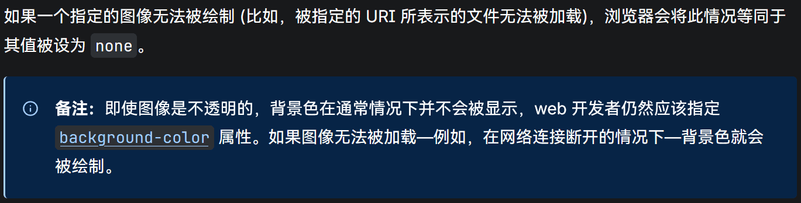
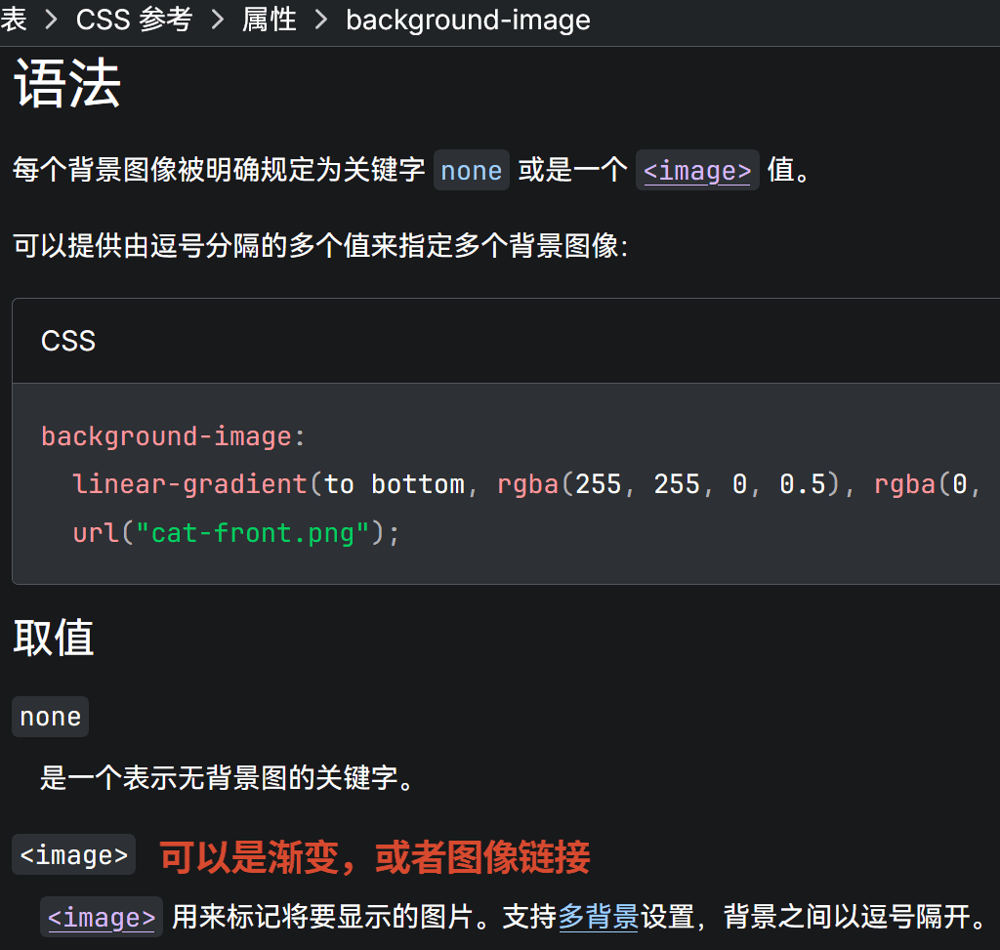

背景原创
作者： 苏扬
日期： 2026年11月7日

作者： 苏扬
日期： 2026年11月7日
background是一个CSS简写属性，其语法包含了8个相关属性：
background的语法如下：
background: 第1层背景, 第2层背景, 第3层背景, ...; /* 每一层背景都可以是一套完整的背景语法 */
/* 一层背景的语法如下 */
/* 属性的顺序可以任意摆放 */
/* 背景位置/背景尺寸：这个写法不能变 */
/* 背景位置、背景尺寸、背景重复、背景图像、背景附着、背景盒子，这6个属性可以省略 */
/* 背景盒子如果写1次，则同时设置背景原点和背景修剪；如果写两次，则顺序为"背景原点 背景修剪" */
/* 如果有多层背景，则"背景颜色"只能写在最后一层 */
background: 背景位置/背景尺寸 背景重复 背景附着 背景颜色 背景图像 背景盒子;
/* 双层背景范例 */
background:
center/cover no-repeat fixed url(图像链接) padding-box content-box, /* 第1层 */
0% 0%/100% repeat local linear-gradient(渐变语法) border-box #234; /* 第2层 */
background-color表示背景颜色，其值只能是颜色代码或颜色关键字。
如果同时指定背景颜色和背景图像，则背景图像会叠加在背景颜色之上。基于这个规则，背景颜色具有后备性，即上方的背景图像失效时，用户依然可以看到下方的背景颜色。

即使设置了背景图像，也依然要设置一个背景颜色作为后备。
background-color: 颜色值; //作为后备
background-image: 图像或渐变; //优先采用，不生效则使用 background-color

背景图像的值不可以用颜色代码或颜色关键字。
背景图像既可以是图像，也可以是纯色或者渐变。
背景尺寸的值由宽、高两部分组成。
/* 宽和高可以用关键字、百分比、长度值 */
/* 只写宽，则高为"auto"，意味着会始终保持图像的原始宽高比 */
/* 下面两句效果相同 */
background-size: 宽;
background-size: 宽 auto;
/* 宽和高可以分开设置 */
background-size: 宽 高;
关键字有以下几种：
当背景图像的尺寸小于容器盒子时，背景重复属性可以控制图像是否重复显示。
背景位置理解起来有点复杂，下方的演示中，使用了两个百分比值来定位背景位置：
背景位置的默认值是0% 0%，即容器盒子的左上角，也是背景尺寸缩放的锚点。
水平位置0%，表示背景图像的左边界与容器盒子的左边界对齐。水平位置100%，表示图像的右边界与容器盒子的右边界对齐。
垂直位置0%，表示背景图像的上边界与容器盒子的上边界对齐；垂直位置100%，表示图像的下边界与容器盒子的下边界对齐；
如果水平和垂直均为50%，则表示背景图像的中心点恰好与容器盒子的中心点对齐。
除了百分比和长度值，我们还可以用以下关键字表示背景位置：
/* 以下3种写法效果相同 */
background-position: 50% 50%;
background-position: center center;
background-position: center;
/* 以下2种写法效果相同 */
background-position: 0% 0%;
background-position: left top;
/* 以下3种写法效果相同 */
background-position: 100% 50%;
background-position: right center;
background-position: right; /* 只写一个维度，另一维度自动设置为50% */
背景原点是指背景位置的参照系，参照系只有3个关键字：
如果容器盒子的边框或者内边距的宽度不为0，即使背景位置相同，在不同的背景原点参考系下，实际的视觉位置也会不同。
背景修剪的值只有4个关键字：
背景修剪的默认值是border-box，即容器盒子的边框区域。
背景附着的值只有3个关键字：
background-attchment: fixed常用来做廉价的视差效果。
| 滚动形式 | fixed | local | scroll |
|---|---|---|---|
| 容器内部滚动 | 固定不动 | 滚动 | 固定不动 |
| 容器外部滚动 | 固定不动 | 滚动 | 滚动 |